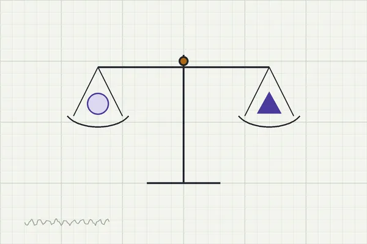

A data-driven approach to identifying and evaluating connectivity-based neural correlates of conscious visual perception
Testing 246 ways of measuring brain connectivity on the COGITATE data gives tentative support to the workspace theory.
Bears on a current study Abstract only
Our analysis
- Question
- Testing 246 ways of measuring brain connectivity on the COGITATE data gives tentative support to the workspace theory.
- Data and method
- COGITATE MEG, 94 of 100 downloaded participants with anatomy for source localisation. 246 functional connectivity measures between IIT- and GNWT-predicted regions; barycenter-based measures decoded stimuli best and generalised across regions. Neural mass models: GNWT with delayed ignition, IIT with synchronous sensory dynamics; both captured the observed patterns. Conclusion: tentative support for GNWT, because ignition appeared regardless of task demands. A correction was issued (niag071).
- Results
- Rather than pick one connectivity measure, the authors tried 246 of them on the same public recordings, found the family that best tells pictures apart, and then built small brain models of each theory to see which reproduced it. Both models fit; the authors lean slightly towards the workspace theory.
- What it means for us
- A second independent reanalysis of the same data, from a different angle. Its 246-measure sweep is a template for our pre-registered multiverse; we would hash the measure list first.
- Touches
- news